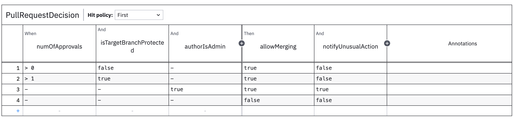

Decisions4s
Complicated conditionals
Scala 3
Higher-Kinded
Data
Voytek Pituła
----
Decisions4s
##### <Boring questions to artificially engage the audience>
* How the system works?
* Why this result?
* Is it correct?
* Engineers vs. Business
* Higher-kinded data?
notes:
- who was asked by non-engineers how the system works?
- who had to investigate why a particular if took a particular path?
- who had to get a greenlight from the business on the logic?
- who suffered due to disconnection between engineering and the business?
- who has even the slightest idea what higher-kinded data is?
++++
notes:
I built a library
using fancy feature called higher kinded data
and scala 3
I want to tell you about both of them
----
# Decisions4s
## THE what
notes:
you have heard the why
++++
Decisions4s » The What » Example
### Business logic
Pull request approval process
- Unprotected branch requires 1 approval
- Protected branch requires 2 approvals
- Admin can merge anything without approvals, but this
sends a notification
- Nothing can be merged otherwise
++++
### Business logic
```scala
val allowMerging =
if (numOfApprovals > 0) {
if (isTargetBranchProtected && (
numOfApprovals > 1 || isUserAdmin
)) true
else !isTargetBranchProtected
} else if (isUserAdmin) true
else false
val notifyUnusualAction = numOfApprovals == 0 && allowMerging
```
++++
### Defining decisions
* Input & Output
* Rules
* Hit Policy
++++
Decisions4s » The What » Example » Defining decisions
### Input & output
```scala
case class Input[F[_]](
numOfApprovals: F[Int],
isTargetBranchProtected: F[Boolean],
userIsAdmin: F[Boolean],
) derives HKD
case class Output[F[_]](
allowMerging: F[Boolean],
notifyUnusualAction: F[Boolean],
) derives HKD
```
++++
### Rule 1
Unprotected branch requires 1 approval
```scala [2|7|3|4|5|8|9]
val rule1 = Rule(
matching = Input(
numOfApprovals = it >= 1,
isTargetBranchProtected = it.isFalse,
userIsAdmin = it.catchAll,
),
output = Output(
allowMerging = true,
notifyUnusualAction = false
),
)
```
++++
### Rule 2
Protected branch requires 2 approvals
```scala [3,4,8]
val rule2 = Rule(
matching = Input(
numOfApprovals = it >= 2,
isTargetBranchProtected = it.isTrue,
userIsAdmin = it.catchAll,
),
output = Output(
allowMerging = true,
notifyUnusualAction = false
),
)
```
++++
### Rule 3
Admin can merge anything without approvals, but this sends a notification
```scala [5,9]
val rule3 = Rule(
matching = Input(
numOfApprovals = it.catchAll,
isTargetBranchProtected = it.catchAll,
userIsAdmin = it.isTrue,
),
output = Output(
allowMerging = true,
notifyUnusualAction = true
),
)
```
++++
### Rule 4
Nothing can be merged otherwise
```scala
val rule4 = Rule.default(
Output(
allowMerging = false,
notifyUnusualAction = false
)
)
```
++++
### Decision table
```scala [1|3|4|5]
val decisionTable: DecisionTable[Input, Output, HitPolicy.First] =
DecisionTable(
Seq(rule1, rule2, rule3, rule4),
"PullRequestDecision",
HitPolicy.First
)
```
++++
### Detour: `HitPolicy`
Strategy defining what to do with triggered rules outputs
* unique
* first
* combine
* count
++++
Decisions4s » The What » Example
### Visualize: markdown
```scala
val markdown = MarkdownRenderer.render(decisionTable)
```
```markdown
|(I) numOfApprovals|(I) isTargetBranchProtected|(I) authorIsAdmin|(O) allowMerging|(O) notifyUnusualAction|
|------------------|---------------------------|-----------------|----------------|-----------------------|
| > 0 | false | - | true | false |
| > 1 | true | - | true | false |
| - | - | true | true | true |
| - | - | - | false | false |
```
++++
### Visualize: DMN
```scala
val dmnXML = DmnRenderer.render(decisionTable).toXML
```

++++
### Evaluate
```scala [1-7|8-11]
val result = decisionTable.evaluateFirst(
Input[Value](
numOfApprovals = 2,
isTargetBranchProtected = true,
authorIsAdmin = false,
),
)
result.output == Some(Output[Value](
allowMerging = true,
notifyUnusualAction = false
))
```
++++
### Diagnose
println(result.makeDiagnosticsString)
```text [1-3|4-7|8|10|13|17]
Evaluation diagnostics for "PullRequestDecision"
Hit policy: First
Result: Some(Output(true,false))
Input:
numOfApprovals: 2
isTargetBranchProtected: true
authorIsAdmin: false
Rule 0 [✗]:
numOfApprovals [✓]: > 0
isTargetBranchProtected [✗]: false
authorIsAdmin [✓]: -
== ✗
Rule 1 [✓]:
numOfApprovals [✓]: > 1
isTargetBranchProtected [✓]: true
authorIsAdmin [✓]: -
== Output(true,false)
```
++++
# Cool?
 ----
Decisions4s
# Decisions4s
## THE how
----
Decisions4s » The how
## Higher Kinded Data
----
Decisions4s
# Decisions4s
## THE how
----
Decisions4s » The how
## Higher Kinded Data
Fancy name for case classes with wrapped fields
case class Foo[F[_]](a: F[Int])
++++
Decisions4s » The how » Higher-Kinded Data
### Difference from tagless final?
trait Foo[F[_]]{
def a: F[Int]
}
Higher-kinded data is actually useful
++++
## How is it useful?
Preserve shape and store
- Rule conditions
- Rule output
- Decision input
- Decision output
- Rule condition result
- Metadata
++++
Decisions4s » The how » Higher-Kinded Data » How is it useful?
### Rule conditions
Check if rule is satisfied for given field (renderable)
Input[[t] =>> Expr[t => Boolean]]
++++
### Detour: `Expr`
```scala
trait Expr[T] {
def evaluate: T
def render: String
}
```
++++
### Rule conditions
```scala [1|3-4|5|7-11]
case class Input[F[_]](a: F[Int], b: F[String])
// [t] =>> Expr[t => Boolean]
type UnaryTest[T] = Expr[T => Boolean]
type RuleCondition = Input[UnaryTest]
// Input[UnaryTest]
case class InlinedInput(
a: Expr[Int => Boolean],
b: Expr[String => Boolean]
)
```
++++
### Rule conditions
```scala [1-4|5-8|10]
object IsPositive extends Expr[Int => Boolean] {
def evaluate: Int => Boolean = _ > 0
def render: String = "isPositive"
}
object IsEmpty extends Expr[String => Boolean] {
def evaluate: String => Boolean = _.isEmpty
def render: String = "isEmpty"
}
Input[UnaryTest](a = IsPositive, b = IsEmpty)
```
++++
### Decision Input
Values passed during evaluation
Input[[t] =>> t]
```scala [3|4|6]
case class Input[F[_]](a: F[Int], b: F[String])
type Id[T] = T
type Value[T] = T
Input[Value](a = 1, b = "hi")
```
++++
### Rule Output
Value produced by the rule (renderable)
Output[[t] =>> Expr[t]]
Output[Expr]
++++
### Rule Output
```scala [3|5-8|11]
case class Output[F[_]](a: F[Int], b: F[String])
type RuleOutput = Output[Expr]
case class Literal[T](value: T) extends Expr[T] {
def evaluate: T = value
def render: String = value.toString
}
val output: RuleOutput =
Input[Expr](a = Literal(1), b = Literal("hi"))
```
++++
### Decision Output
Value produced by the whole decision table
(not renderable)
Output[[t] =>> t]
Output[Value]
++++
### Other
```scala [3|5-6|7-8|9-10|11-12|13-14]
case class Input[F[_]](a: F[Int], b: F[String])
type Const[A] = [t] =>> A
type FieldNames = Input[Const[String]]
// Input("a", "b")
type FieldIndexes = Input[Const[Int]]
// Input(0, 1)
type RuleConditionEvaluated = Input[Const[Boolean]]
// Input(true, false)
type RuleConditionsRendered = Input[Const[String]]
// Input("isPositive", "isEmpty")
type RuleOutputRendered = Output[Const[String]]
// Output("a * 2")
```
++++
Decisions4s » The how » Higher-Kinded Data
### Can we just use maps?
- hard to implement heterogeneous ones
- can't ensure the key set
- no IDE support
++++
### HKD vs GADTs
HKD can be seen as higher kinded GADT
```scala
// GADT
enum Box[T](contents: T) {
case IntBox(n: Int) extends Box[Int](n)
case BoolBox(b: Boolean) extends Box[Boolean](b)
}
```
----
Decisions4s » The how » Higher-Kinded Data
### Higher-Kinded Data
Operations
++++
Decisions4s » The how » Higher-Kinded Data » Operations
## How to operate on HKD
```scala [3,6,9]
trait HKD[Data[_[_]]] {
def pure[A[_]](f: [t] => () => A[t]): Data[A]
extension [A[_]](af: Data[A]) {
def mapK[B[_]](f: [t] => A[t] => B[t]): Data[B]
}
def map2[A[_], B[_], C[_]](
dataA: Data[A],
dataB: Data[B],
f: [t] => (A[t], B[t]) => C[t],
): Data[C]
}
```
++++
### `HKD.pure`
Create an instance
```scala
def pure[A[_]](f: [t] => () => A[t]): Data[A]
```
```scala [|4-6]
object Rule {
def default[Input[_[_]]: HKD, Output[_[_]]: HKD](output: Output[OutputValue]): Rule[Input, Output] = {
Rule(
matching = HKD[Input].pure[UnaryTest](
[t] => () => it.catchAll[t]
),
output = output,
)
}
}
```
++++
### `HKD.mapK`
Transform each field
```scala
extension [A[_]](af: Data[A]) {
def mapK[B[_]](f: [t] => A[t] => B[t]): Data[B]
}
```
```scala [|3|6]
class Rule[..., Output[_[_]]: HKD](...) {
def evaluateOutput(): Output[Value] = {
output.mapK([t] => expr => expr.evaluate)
}
def renderOutput(): Output[Const[String] = {
output.mapK([t] => expr => expr.render)
}
}
```
++++
### `HKD.map2`
Merge two objects field by field
```scala [|2,3|5]
def map2[A[_], B[_], C[_]](
dataA: Data[A],
dataB: Data[B]
)(
f: [t] => (A[t], B[t]) => C[t],
): Data[C]
```
```scala [2|3-6]
class Rule[..., Output[_[_]]: HKD](...) {
def evaluate(in: Input[Value]): Input[Const[Boolean]] =
HKD.map2(matching, in)(
[t] => (expr, value) => expr.evaluate(value)
)
}
```
++++
### Don't implement this by hand
[tschuchortdev/hkd4s](https://github.com/tschuchortdev/hkd4s)
++++
Decisions4s » The how » Higher-Kinded Data » Recursion
### Recursion is hard
++++
### Recursion is hard
To wrap or not to wrap?
```scala [3-5]
case class Foo[F[_]](a: F[Int])
case class Bar1[F[_]](b: Foo[F])
// or
case class Bar2[F[_]](b: F[Foo[F]])
```
++++
### Recursion is hard
Which variant to choose?
```scala
extension [A[_]](af: Data[A]) {
def mapK[B[_]](f: A ~> B)(using Functor[B]): Data[B]
def mapK1[B[_]](f: A ~> B)(using Functor[A]): Data[B]
}
```
++++
### Recursion is hard
`map2` is an absolute mess
++++
### Recursion is hard
Storing metadata is more complicated
```scala
case class Const[V](
value: V
child: Option[Const[V]]
)
val meta: Input[Const]
```
Works only with wrapping
----
Decisions4s » The how
## Scala 3
Why `Decisions4s` would be very awakward in Scala 2
++++
Decisions4s » The how » Scala 3
### Type lambdas
Type-level functions
```scala
// Scala 3
[t] =>> Either[Int, t]
// Scala 2
({ type X[t] = Either[Int, t] })#X
// Scala 2 with kind-projector
Lambda[t => Either[Int, t]]
```
Plenty of examples presented before
++++
### Polymorphic functions
```scala
// Scala 3, can be inline
type Poly[F[_], G[_]] = [A] => F[A] => G[A]
// Scala 2
trait Poly[F[_], G[_]] {
def run[A](fa: F[A]): G[A]
}
```
++++
### Polymorphic functions
```scala
// Scala 3
val eitherToOption = [A] => (x: Either[Any, A]) => x.toOption
// Scala 2
val eitherToOption = new Poly[Either[Any, *], Option] {
def run[A](x: Either[Any, A]): Option[A] = x.toOption
}
```
++++
### Polymorphic functions
Examples
```scala
[T] => (x: Expr[T]) => x.render
[T] => (x: Expr[T => Boolean], v: T) = x.evaluate(v)
```
++++
### Context functions
```scala
// Scala 3
val foo: Context ?=> Int => String
// Scala 2
def foo(implicit ctx: Context): Int
// not possible
val fooAsValue = foo
```
++++
### Context functions
```scala [1-4|6-9]
// grants access to the whole input
trait EvaluationContext[In[_[_]]] {
def wholeInput: In[Expr]
}
class Rule[Input[_[_]]: HKD, Output[_[_]]: HKD](
val matching: EvaluationContext[Input] ?=> Input[UnaryTest],
val output: EvaluationContext[Input] ?=> Output[OutputValue],
)
```
++++
### Context functions
```scala [7]
// syntax
def wholeInput[In[_[_]]](using ec: EvaluationContext[In]): In[Expr] =
ec.wholeInput
val rule = Rule(
...
output = Output(c = wholeInput.a + wholeInput.b)
)
```
++++
### Type Class derivation
```scala [2|5]
case class Input[F[_]](a: F[Int])
derives HKD
object HKD {
inline def derived[F[_[_]]](using K11.ProductGeneric[F], Labelling[F[Const[Any]]]): HKD[F] = shapeGen
}
```
----
Decisions4s
## Decisions4s
### A bit more context
++++
Decisions4s » Context
### How and why was it built
* I work at SwissBorg
* I work at Payments
* Each payment transaction goes through dozens of checks
* Checks are defined by the business
* We also have other usecases (KYC checks, fiat payment routing)
++++
Decisions4s » Context
## We're hiring!
### Remotely!
#### For good bucks!
++++
Decisions4s » Context
### Can we let the business edit the rules?
We can but we shouldn't
++++
Decisions4s » Context
### Is it production-ready?
Everything is production-ready if you're brave enough
----
Decisions4s
### Talk to the business!
Thank you!
Voytek Pituła @ SwissBorg
[https://w.pitula.me/presentations](https://w.pitula.me/presentations)